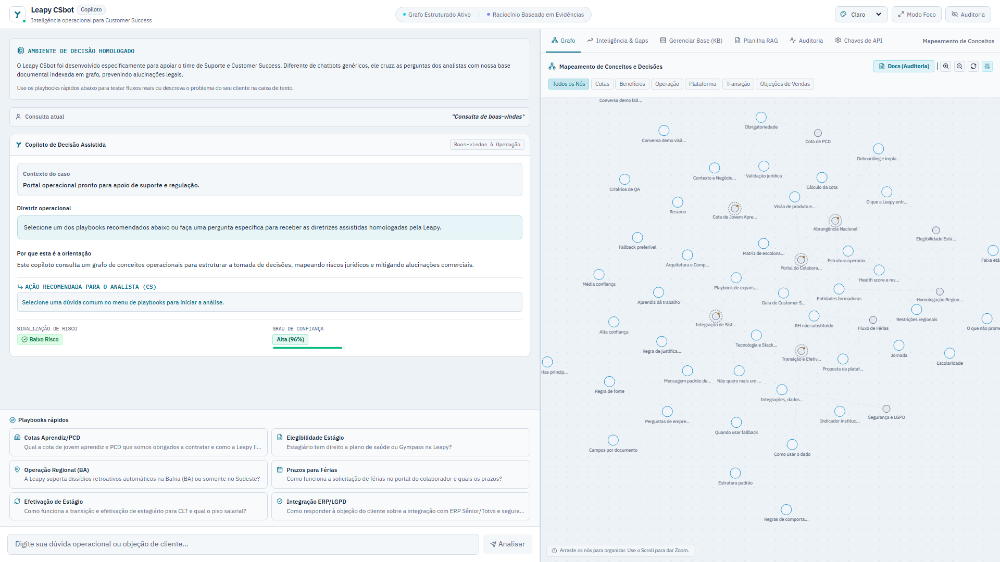
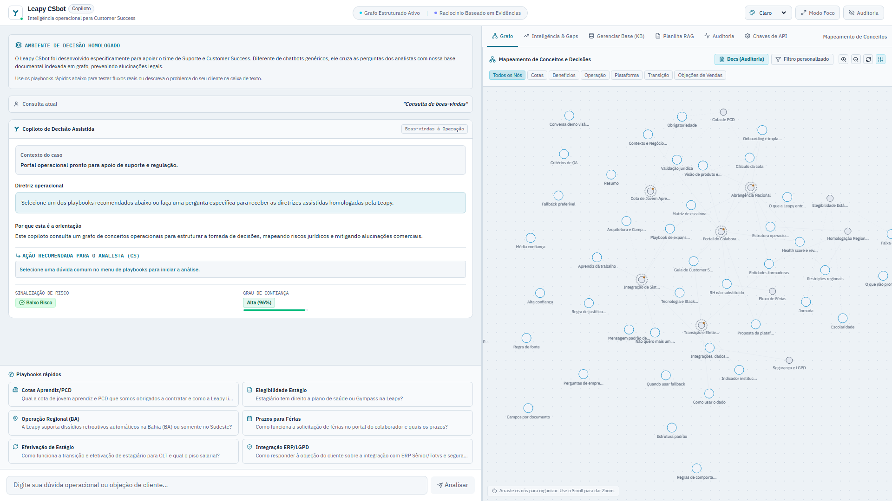

Um copiloto de Customer Success que transforma documentos em respostas rastreáveis, decisões seguras e aprendizado contínuo.
Busca em títulos, palavras-chave e conteúdo, seguida de expansão pelos relacionamentos do grafo.
Diretriz, justificativa, confiança, risco e próxima ação em campos previsíveis.
Auditoria, feedback e gaps convertem dúvidas reais em melhoria contínua da base.
O analista deve entender o que fazer, por que fazer e onde conferir — sem depender de confiança cega no modelo.
A interface prioriza a orientação de CS e mantém a evidência acessível ao lado, sem transformar a experiência em um terminal técnico.

A arquitetura foi pensada para tornar o caminho da resposta observável, mesmo em um protótipo executável localmente.
Chunks fictícios, metadados e playbooks de CS.
Correspondência lexical em título, tags e conteúdo.
Vizinhos de primeiro grau enriquecem a evidência.
Instruções restritas e saída JSON estruturada.
Nós usados, confiança, feedback e gaps.
O “raciocínio” apresentado ao usuário é uma justificativa baseada em evidências, não a cadeia interna de pensamento do modelo. Isso preserva clareza, segurança e auditabilidade.
Resume o caso para confirmar o entendimento da pergunta.
Entrega a orientação objetiva que o analista pode usar.
Conecta a resposta aos documentos recuperados em até duas frases.
Destaca documentos e conceitos no grafo para inspeção.
Transforma conhecimento em procedimento de CS.
Ajuda o analista a decidir quando responder ou escalar.
Se preço, SLA, condição contratual ou outro dado não estiver coberto, o sistema recusa a resposta e indica o time responsável.
Resultado: menos alucinação e menor risco de promessa comercial indevida.
Busca por conteúdo, tipo de nó, tópico, relação com a decisão e origem sintética. O usuário pode construir uma visão específica sem perder o contexto geral.
Todos os playbooks adicionais estão marcados como demonstração/fictício, separando fatos públicos, cenários inventados e guardrails.

Para um fellowship de tecnologia, a solução é competitiva porque demonstra capacidade de produto, frontend, backend, IA aplicada e julgamento de risco.
Adicionar `fontes: string[]` com 1–3 referências exatas. Hoje a evidência aparece pelos nós destacados, mas a citação deve existir também como dado estruturado.
Remover do console até mesmo o prefixo da chave de API. Credenciais não devem aparecer em logs.
Criar 6–10 perguntas com expectativa de intenção, fallback e presença de fonte. Isso transforma confiança subjetiva em evidência.
Documentar execução, arquitetura, limitações, modo simulado e roteiro da demo.
“Olá, eu sou André Victor Andrade Oliveira Santos. Construí o Leapy CSbot, um copiloto de CS com evidência, justificativa e rastreabilidade.”
Explique que rapidez sem segurança não basta; apresente diretriz, risco, confiança e próxima ação.
Busca em documentos, expansão pelo grafo e síntese estruturada com limite de contexto.
Use “Cotas Aprendiz/PCD”. Mostre resposta, justificativa, risco, próxima ação e abra uma evidência.
Pergunte por preço e SLA. Mostre a recusa segura e o escalonamento.
Mostre feedback, gaps e curadoria. Reforce que o produto aprende com o uso.
“Resposta rápida para CS, evidência para auditoria e aprendizado contínuo da base. Obrigado.”
1080p · perguntas previamente preparadas · sem digitação ao vivo · não abrir chaves de API · deixar 10 segundos de margem.
O material interpreta os sinais visuais públicos da Leapy: contraste alto, títulos diretos, cores vivas e uma linguagem otimista ligada a movimento, desenvolvimento e impacto.